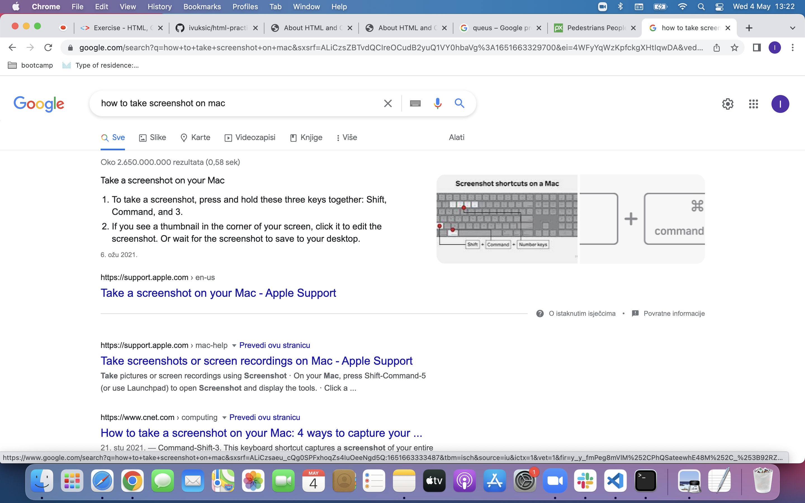
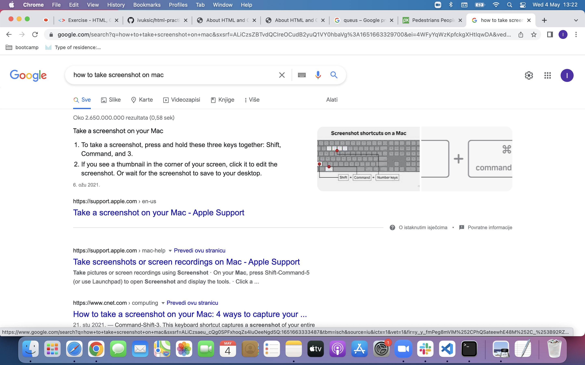
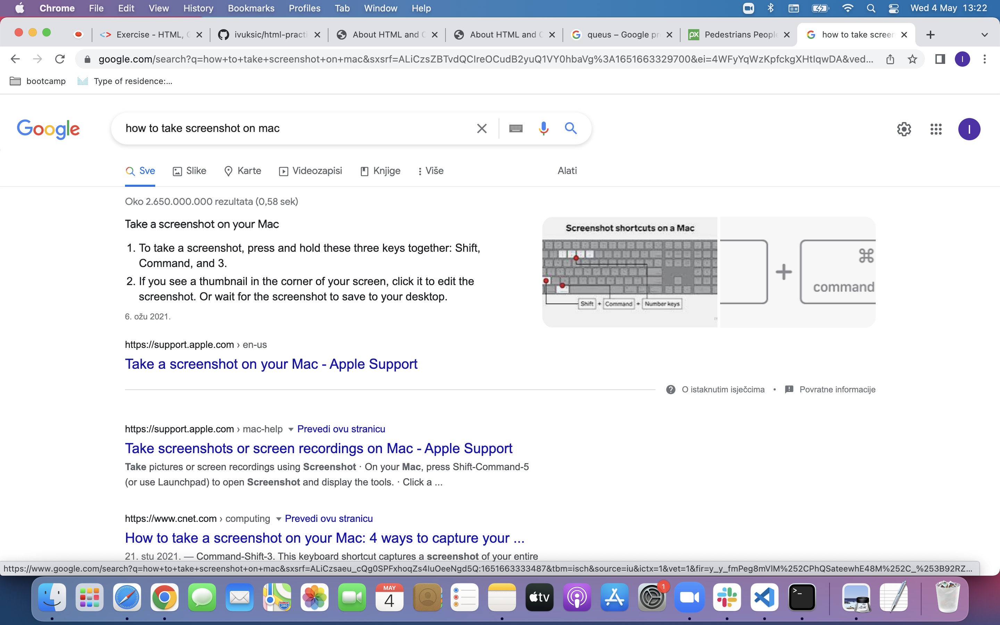
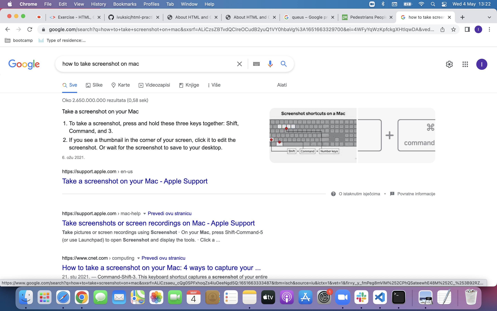

Answers about Life
- its fine
- not much, how about you
- no one knows
- probably
- perfect doesnt exist
- general consesus is:
- yes
- no
- maybe
- they say 9 but most of the cats in fact have only one. Find out more
- answer bellow
 


